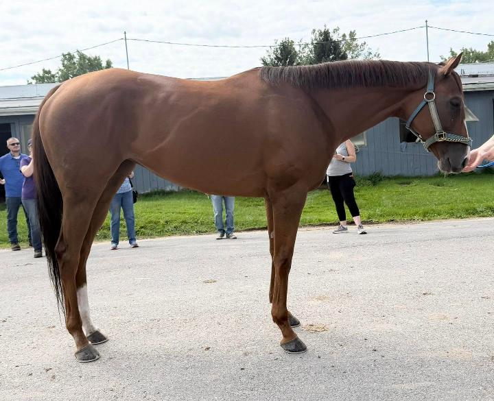
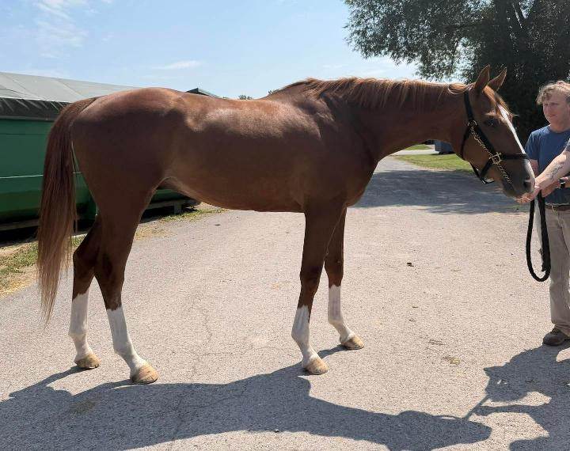
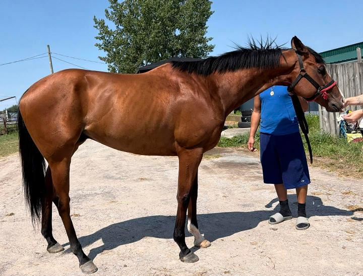
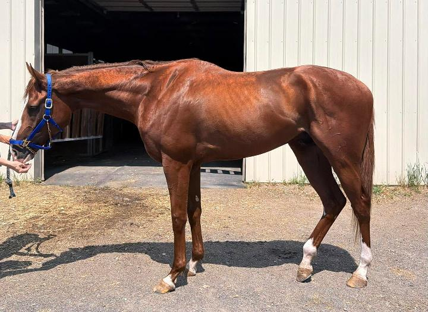
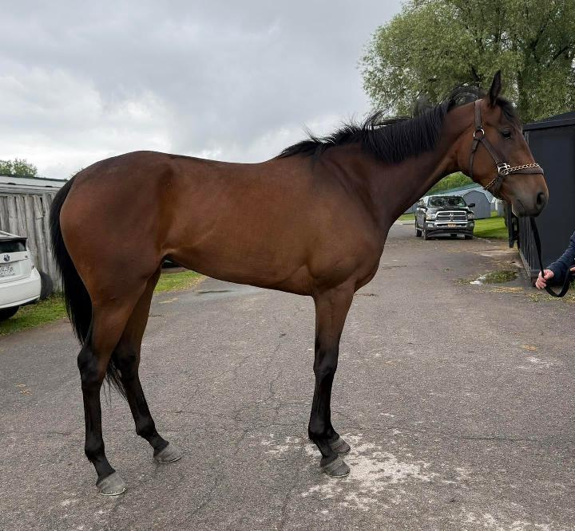
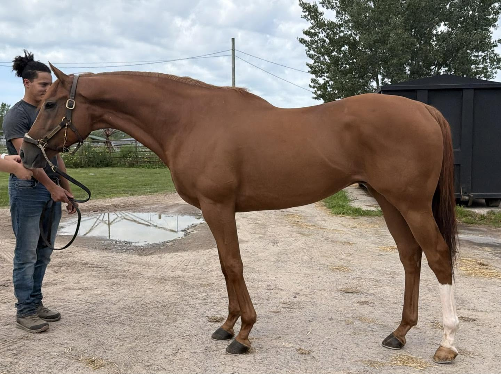

Placed Horses

Here’s an adorable mare that smashes ALL of the chestnut mare stereo-types! She’s a super sweet, friendly, affectionate, and a total in-your-pocket type of girl! Just as cute as she can possibly be. We were told that she is lovely to handle, has no stable vices, and even keeps the tidiest stall in the barn. Continue Reading...

What is red and white and big and a flashy, Mr. Fancy-pants all-over? Meet Lago Di Como! From his gleaming chestnut coat with its golden sheen to all the flashy chrome on his legs and face, this is a horse that will get you noticed in any show ring. This beloved homebred was recently gelded; as a three-year old as he was deemed to be getting too heavy to be a racehorse. Continue Reading...

Located at the Finger Lakes Race Track in Farmington, NY (near Rochester, NY). If you’re looking for a handsome, agreeable, been-there-done-that warhorse, look no further! Here’s a super cute horse with a cute name! We previously met (and fell in love with) him in a prior year as we were listing a stablemate, we’ve followed his career, and were happy to see that it’s now his turn! He’s a genuinely all-round, really nice boy! We’re told that he is sound, has no stable vices, has clean legs (which we observed), no known injuries, and also that he turns out well in a herd. Continue Reading...

Located at a farm near Finger Lakes Racetrack, Farmington, NY (near Rochester) If sweet, easy, and laid back all wrapped up in a fancy package sounds like what you are looking for, then Twisted Banker is the horse for you! This quiet boy had been gelded a week prior to our volunteer meeting him but he never knew he was a “boy”. Continue Reading...

Located at Finger Lakes Racetrack, Farmington, NY (near Rochester) If quiet, sound, and sweet-as-can-be are boxes on your check list, then you won’t want to miss Queen Isla! Isla is a kind filly that only had one start as a. 2 year old and is showing no promise this year as a 3 year old so her connections feel it is best to let her go find another job. Continue Reading...

If you are looking for a powerhouse with loads of personality, then look no farther than Don Antonio! This guy is a barn favorite and boy does he know it. Continue Reading...